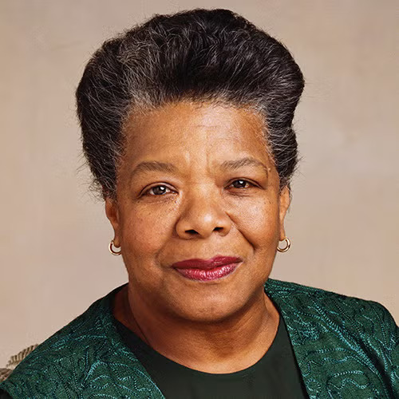
1969 — memoir
Maya Angelou
In I Know Why the Caged Bird Sings, Angelou wrote about being raped at age seven — and the long silence that followed. Foundational for a generation.
Be inspired by the people who have broken the cycle of silence that perpetuates childhood sexual abuse. Their courage is a door — walk through it, and you'll find you are not alone.
For every adult who finds the words, there are others who have carried the silence for decades — waiting to hear that someone else survived, someone else spoke, someone else was believed. Listening is how we hand that permission forward.
The voices on this page belong to survivors, advocates, and community members who chose to tell the truth out loud. Their stories are offered with care — and with the steady belief that hearing them will help another brave voice find its way out.
Each story is shared with permission. Some names have been changed to protect identities; the truth has not been.
"There is no denying that this two-hour interview is, at times, difficult to hear — expect harsh language and graphic content. I find the bravery, vulnerability, and learning shared in it vitally important to understanding this complex, multifaceted social dilemma. I find hope, inspiration, and value in this Brave Voice breaking his personal silence — and, in doing so, breaking the cycle of silence that has perpetuated childhood sexual abuse for generations."
Listener discretion advised. This two-hour audio interview contains mature themes and graphic content.
"I am sharing my lived experience to help others get honest, speak up, come to terms with their journey, and heal. My hope is that someone else's healing will be more inviting — and more useful — than the retelling of my story."
In a 2014 interview, Guerry Glover speaks publicly about what was done to him as a nine-year-old child, and about the long road from carrying that silence to choosing to break it. His voice joins a growing chorus of men who refuse to let shame keep the story buried.
In 2014, David Moody speaks openly about his experience of childhood sexual abuse — adding his name to the public record at a time when most men of his generation still carried this kind of story alone.
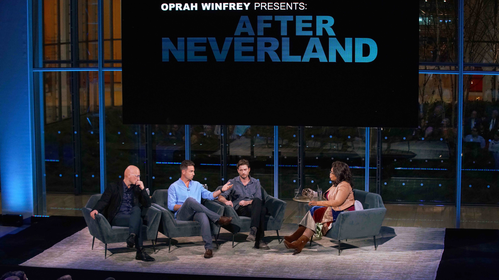
Following HBO's Leaving Neverland, Wade Robson and James Safechuck sit down with Oprah Winfrey to talk about what was done to them as children, why they could not say it for decades, and what changed when they finally did. A study in how long the silence can last — and what it takes to break it.
A growing series of audio and videos featuring the Brave Voices who have shared their stories on Archive StoryCorps. Sit with us in the joy and exhilaration that often follows the act of finally being heard.
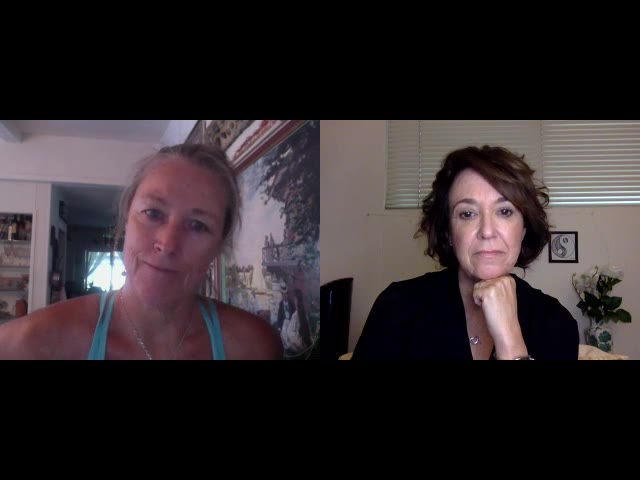
Recorded for Archive StoryCorps, this is Cheryle's full interview — her own words about the silence she carried, the people who helped her find her voice, and why she believes prevention is the work of grown-ups.
The minutes after telling your story out loud are their own kind of healing. In this short follow-up, Cheryle shares what it felt like to sit at the StoryCorps mic — the relief, the surprise, and the energy that comes when the silence finally breaks.
Hollis Wilder reflects in the moments after her StoryCorps recording — what surfaced, what surprised her, and what it meant to add her voice to a growing chorus of survivors choosing to speak.
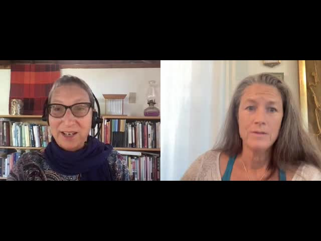
Laura Davis — co-author of The Courage to Heal, the survivor handbook that helped shape a generation — sits down with Cheryle Gail Grace for the Brave Voices Community. Two Brave Voices, one conversation, decades in the making.
Their interview is archived with Archive StoryCorps, BraveVoices.org, and the Library of Congress.
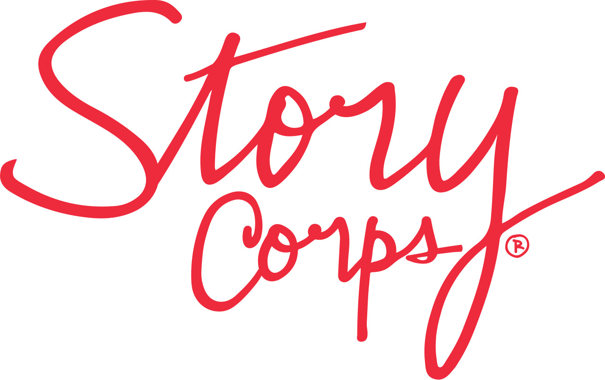
The interviews above are a few of the voices we've featured on this site, but the full Brave Voices community archive on StoryCorps holds many more — survivors, advocates, and listeners who've added their stories to the collective record.
The collection is held permanently with Archive StoryCorps and the Library of Congress, and grows whenever another Brave Voice chooses to speak.
A short documentary that gathers six survivors of sexual assault into one quiet, unflinching circle.
"A candid, haunting, and powerful account of six survivors of sexual assault speaking out in their own words. They reveal the effects the abuse has on trust, family, relationships, and their souls. Poignant, troubling, inspiring, and amazing — their stories mesmerize the viewer."
For most of recorded history, childhood sexual abuse went unspoken — protected by shame, dismissed by institutions, and absorbed by survivors in silence. What follows is a short, deliberately incomplete walk through some of the moments — and the Brave Voices — who began to break that silence.
Women's liberation organizers convene the first public "speak-outs" against sexual violence in New York. Naming the harm in front of strangers becomes a tool — and a permission slip — for everyone who follows.
Rush publishes The Best Kept Secret: Sexual Abuse of Children — the first major feminist analysis arguing that childhood sexual abuse is a systemic, cultural problem rather than a private misfortune. It reframes the conversation from individual tragedy to public harm.
On her daytime show, Oprah names her own childhood sexual abuse on the air. Millions of viewers hear a survivor speak in the first person — for many, the first time they have ever heard such a thing said out loud.
1-800-422-4453 becomes one of the first 24/7 places in the United States where any child or adult can call. The line is still answered today.
The book becomes the most-read survivor handbook of its generation, putting language to experiences that millions of adults had carried alone. It centers survivors as authorities on their own lives.
The former Miss America publicly discloses that she was repeatedly sexually abused as a child by her wealthy, prominent father. National coverage shifts the conversation about who is harmed and by whom.
A team of reporters publishes the investigation into clergy sexual abuse, naming patterns of cover-up that had protected institutions for decades. A global reckoning across the Catholic Church follows — driven, throughout, by the persistence of survivors.
A survivor and youth worker in the Bronx, Burke creates "Me Too" as a healing tool for Black and Brown girls and women — built around the simple, radical act of one survivor saying to another, me too. It would take a decade for the wider world to catch up.
On a two-part Oprah special, Tyler Perry takes the stage alongside 200 men who name themselves, on national television, as survivors of childhood sexual abuse. The image of that many men refusing silence together reaches audiences who had never imagined seeing it.
Survivor advocate Erin Merryn's state-by-state campaign — laws that require schools to teach age-appropriate child sexual abuse prevention — has by now been signed in more than two dozen states, and the federal Every Student Succeeds Act of 2015 carries the same prevention requirements into U.S. education policy.
A decade after Tarana Burke first wrote them down, the words me too become a public flood across social media. In a matter of weeks, what had been carried privately for generations is being named openly, by millions, in nearly every industry and institution.
At Larry Nassar's sentencing in Ingham County, Michigan, Kyle Stephens delivers the first victim impact statement: Little girls don't stay little forever; they grow into strong women that return to destroy your world. Over seven days, more than 150 survivors take the stand — together turning a courtroom into a national act of speaking out.
Denhollander — who in 2016 was the first survivor to publicly accuse Nassar — publishes What Is a Girl Worth?, her memoir of how a Brave Voice is made: the years of silence, the cost of speaking, and the conviction that another child's safety is worth all of it.
Survivor leadership now shapes courtrooms, statehouses, classrooms, documentaries, and family kitchen tables. Brave Voices stands inside that chorus, holding space for the next adult to choose courage over silence — and the next child who will live in a world where that choice was made.
Across decades of memoirs, interviews, essays, and on-air conversations, public figures have chosen to share their experiences of childhood sexual abuse. They didn't have to. Their disclosures don't fix anything on their own — but each one quietly tells the next person carrying the same silence that they are not the only one.

In I Know Why the Caged Bird Sings, Angelou wrote about being raped at age seven — and the long silence that followed. Foundational for a generation.
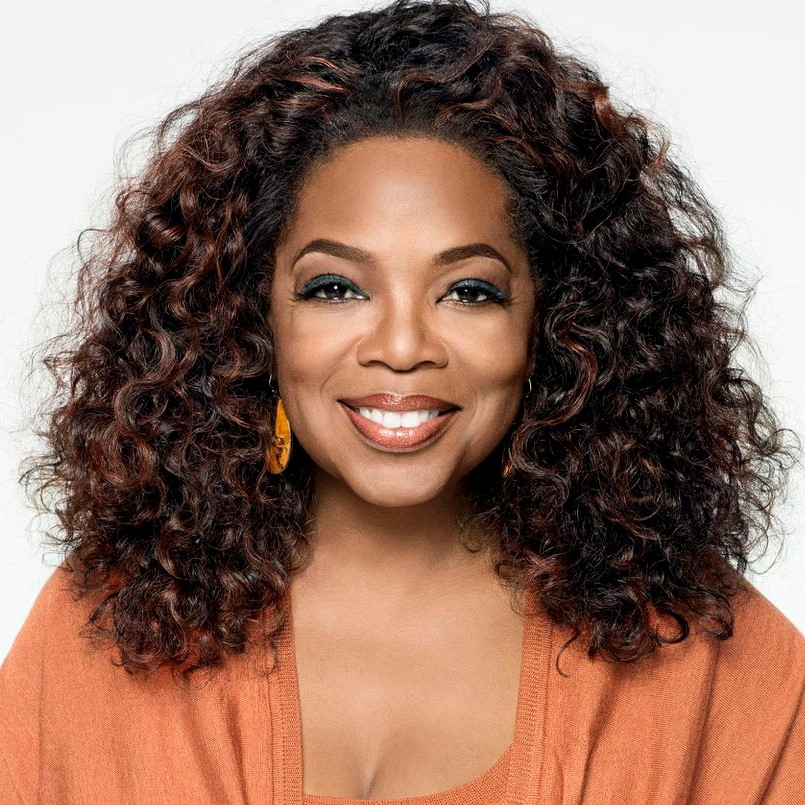
On her own show, in front of a national audience, Oprah named her own childhood abuse. She has returned to the subject many times since.
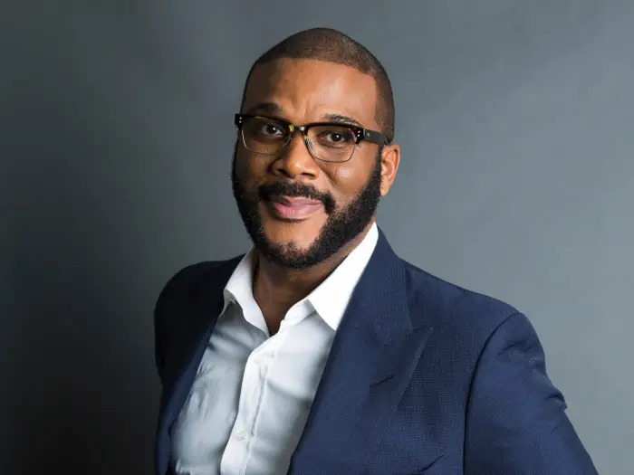
On Oprah's "200 Men" episode, Perry took the stage with hundreds of male survivors — refusing the silence that so often surrounds men who were harmed as boys.
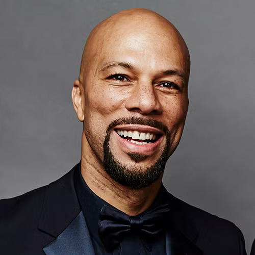
In One Day It'll All Make Sense, the rapper wrote about being sexually abused as a child by a family friend, and the long work of healing that followed.
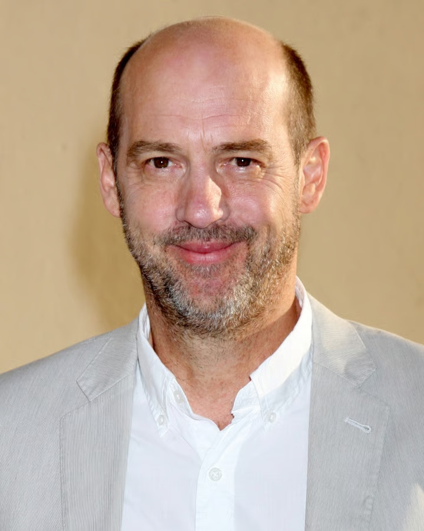
In a personal essay, the actor named the abuse he experienced as a child at the hands of a man who had positioned himself as a mentor.
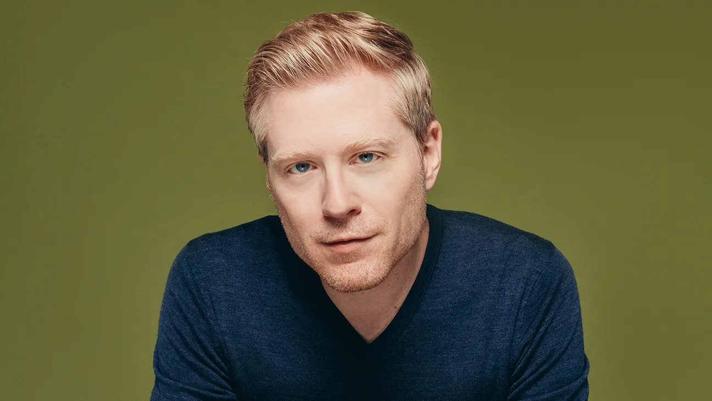
Rapp publicly disclosed being targeted at fourteen by an older man in the entertainment industry — opening the door for many others to come forward.
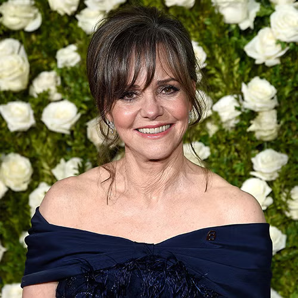
In In Pieces, Field wrote, for the first time publicly, about the sexual abuse she experienced as a child at the hands of her stepfather.

In Inside Out, Moore wrote about being raped at fifteen by a man who had paid her mother for access to her — and the inheritance silence had been passing down.
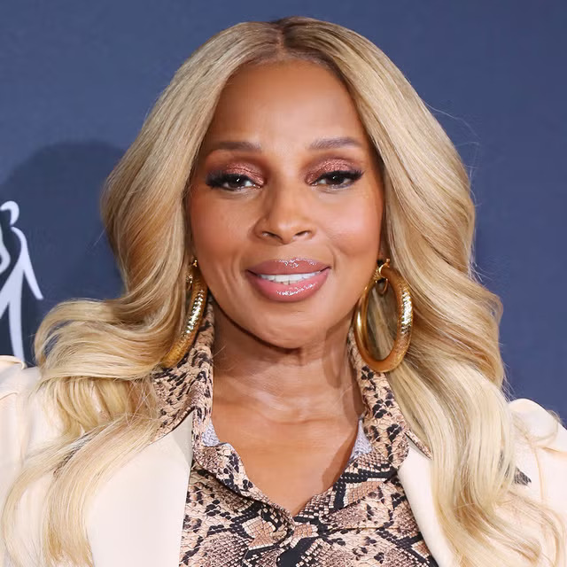
Across decades of interviews and song lyrics, Blige has named the sexual abuse she experienced as a child. Her music has become a vehicle for survivors' feelings.
This list is necessarily a small sample. Every survivor's story matters equally — not just the ones the world hears about.
Listening and speaking are the same work from different sides. If these stories stirred something in you, there's a next step waiting.
Speak even when your voice shakes.